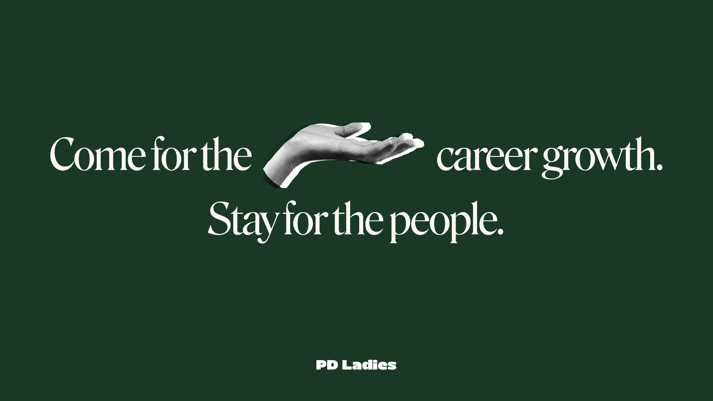
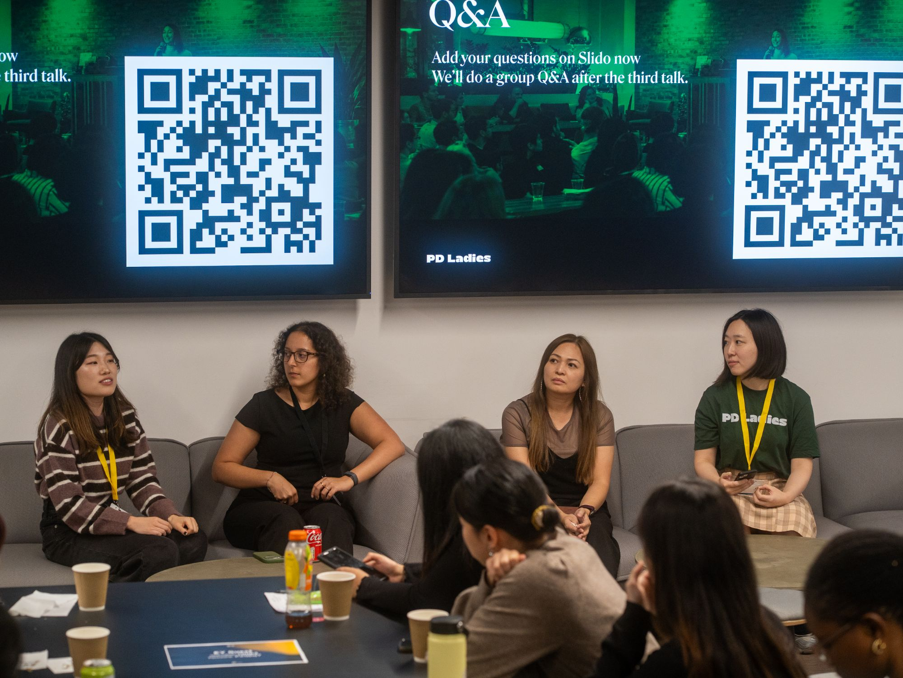
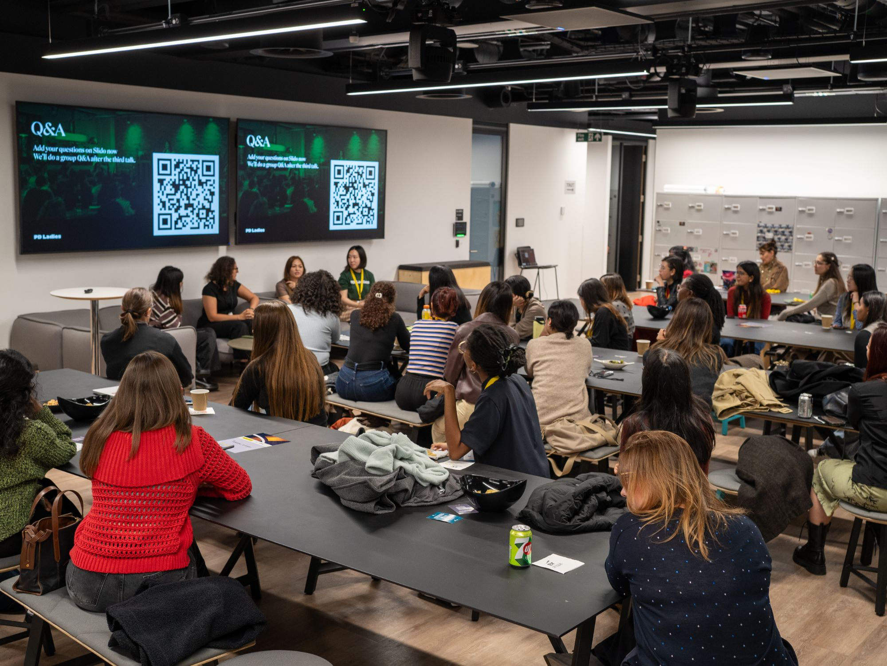

PD Ladies Design Talk Series
PD Ladies is a UK-based community of 800+ women working in product design, from juniors to seniors to leaders. I planned and delivered the first event in PD Ladies’ ongoing design talk series, hosted at EY Studio+ on 29 October 2026. Starting from scratch, I developed the “Cultural Context” theme, recruited relevant speakers, and created speaker briefing and venue pitch decks. I also built and managed the Luma event page, coordinated speaker communications and presentations, and supported attendee check-in on the day, helping lay the groundwork for future events.
View the event on LumaEY Studio+ · 29 October 2026 · Opens in a new tab

If you’re a woman working in product design in the UK, join our community for free—and come along to our next design talk in 2027!
www.pdladies.uk
Got an idea for our next design talk? Email me at hello@pdladies.uk
Give me one less thing to worry about.